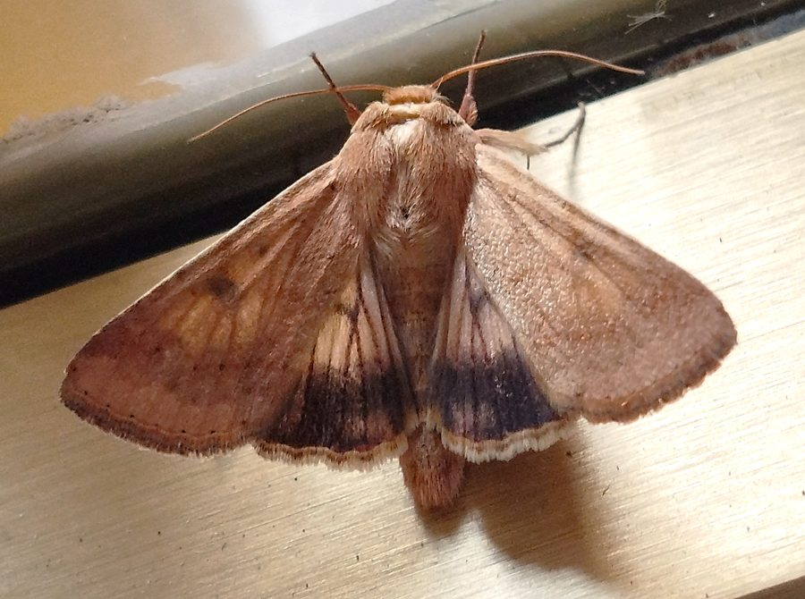

चने की सूंडीGram Pod Borer
Helicoverpa armigera · Noctuidae · INS-0058

- Scientific name
- Helicoverpa armigera (Hübner, 1809)
- Family
- Noctuidae
- Hindi
- चने की सूंडी
- Local names
- chane ki sundi, chana sundi, phali bhedak, pod borer, bollworm
- Status here
- native
- Movement
- Migrant
- IUCN
- not evaluated
- Review
- audited and independently read
When to look कब देखें
Migrant प्रवासी. Expected mainly in March, April, May, September, October, November, December.
Long-distance migrants in spring (March–May) and autumn (September–October); populations in eastern UP are reinforced by immigrants from southern India. All migrants and visitors →
Uses and possibilities उपयोग और संभावनाएँ
Drawn from the documented uses in the profile below, where each is labelled traditional, current or a research lead. All uses →
Tell it apart from इनसे अलग पहचानें
चने की सूंडी / Gram Pod Borer
Helicoverpa armigera (Hübner, 1809) — Noctuidae
चने की सूंडी (छंदवर्मि / कपास की सूंडी) — भारत का सब से बड़ा कृषि नुकसान करने वाला कीट, जो चने, अरहर, मसूर, कपास, टमाटर, और सौ से ज़्यादा दूसरी फसलों की फलियों और फलों के अंदर घुसकर खा जाता है। इसकी इल्ली (सूंडी) हल्के भूरे से काले रंग की होती है, और गोल, चिकनी, हरे या भूरे फलों को देखते ही अंदर घुसने की कोशिश करती है। एक ही फली के अंदर कई इल्लियाँ हो सकती हैं। रात को सक्रिय, दिन में मिट्टी में छिपी रहती है। इसका नियंत्रण कठिन है क्योंकि यह 300 से ज़्यादा पौधों पर रहता है।
Quick Identification त्वरित पहचान
| Feature | Description |
|---|---|
| Adult moth | Olive-brown to greyish-brown wings; hindwings pale yellow with dark margin; wingspan 30–38 mm |
| Larva (sundi) | Smooth caterpillar, 30–40 mm; colour varies from light pink/green to dark brown or black; sparse dark hairs on body |
| Larval head | Brown or reddish, contrasting with body colour |
| Larval behaviour | Nocturnal; hides in soil during day; burrows into pods, fruits, and shoots |
| Larval mark | Lacks the dense black crescent spots of tobacco cutworm; sparsely hairy |
| Damage sign | Holes in pods or fruits; internal tunnelling and frass (dark droppings) inside |
Field tip: Search for larvae at dusk, when they emerge to feed. Look for green or pink caterpillars boring into developing pods of gram, chickpea, or cotton bolls. During the day, dig gently around the base of infested plants to find larvae curled up in the soil. The presence of dark frass outside a hole in a pod is a sure sign.
हिंदी — कैसे पहचानें: सूर्यास्त के बाद चने के खेत में देखो — हरी या गुलाबी सूंडियाँ फलियों में घुसती दिखेंगी। दिन में मिट्टी के पास खोदकर देखो। फली में गहरे रंग की बूँदें (मल) हों तो यही है।
Morphology आकारिकी
Biometrics:
| Measurement | Range |
|---|---|
| Adult body length | 15–18 mm |
| Adult wingspan | 30–38 mm |
| Mature larval length | 30–40 mm |
| Egg diameter | 0.8–1 mm, spherical, creamy white |
| Pupal length | 15–18 mm |
| Larvae per infested pod | 1–3 (usually 1–2) |
Adult moth: Olive-brown to greyish-brown forewings, often with fine wavy lines. Hindwings are pale yellow with a thin dark brown margin. The body is stout, covered with fine scales. Both males and females show sexual dimorphism in colouration.
Egg: Spherical, creamy-white or pale yellow, ribbed, laid singly or in small clusters on the host plant, particularly on flower buds and developing pods.
Larval stage: Six instars. Newly hatched larvae are pale, almost transparent. As they grow, colour varies from light pink, green, yellow, to dark brown or almost black. Larvae are smooth with sparse dark setae (hairs). The head is always distinctly darker (brown or reddish) than the body. Body texture is smoother than in Spodoptera (tobacco cutworm) species. Some individuals are striped along the body length.
हिंदी: पतंगा भूरा। अंडे सफ़ेद, गोल, फूलों पर। सूंडी हल्की से गहरी भूरी, चिकनी, सर काला। तंबाकू की सूंडी से बाल कम, धब्बे नहीं।
Behaviour & Ecology व्यवहार और पारिस्थितिकी
A highly polyphagous (generalist) pest, capable of feeding on over 300 plant species, from legumes to cotton to tomato. Larvae are most destructive during their later instars (4th, 5th, 6th), when they feed voraciously on pods, fruits, and reproductive parts. The larvae are nocturnal, emerging to feed at dusk and hiding in the soil or plant debris during the day. Females lay eggs on a wide range of host plants, reflecting the insect's remarkable adaptability.
The larva's habit of boring directly into pods and fruits makes it difficult to control with contact insecticides — the insect is protected inside. Pupation occurs in the soil, in an earthen cocoon, and can be prolonged in cool weather (allowing overwinter survival) or rapid in warm weather (allowing multiple generations). The pest is capable of long-distance migration, especially in spring and autumn, when populations shift geographically with host plant availability.
हिंदी: सौ किस्म के पौधों पर खाती है। रात को खुलती है, दिन में मिट्टी में। फली के अंदर घुसने से कीटनाशक नहीं लगता। पूरे भारत में घूमती रहती है।
Life Cycle / Phenology जीवन चक्र
| Stage / season | Event |
|---|---|
| Egg, 3–4 days | Laid on host plant buds and developing pods |
| Larval period, 15–25 days | Six instars; fastest in warm weather |
| Pupal stage, 7–14 days | In soil; longer in cool season |
| Adult, 7–10 days | Feeding and oviposition |
| March–May | Spring migration of long-winged adults; new crop infestations begin |
| June–August | Declining activity on kharif cotton; summer population bottleneck |
| September–October | Major autumn migration; population buildup on cool-season legumes |
| October–November | Heavy infestations on gram, chickpea, lentil |
| December–January | Populations decline as crops mature; some survival on ratoons and new sowings |
| February–April | Scattered activity; preparation for spring migration |
हिंदी: अंडा तीन-चार दिन, सूंडी पंद्रह-पचीस दिन, प्यूपा सात-चौदह दिन। गर्मी में हर पखवाड़े एक पीढ़ी नई। मार्च-मई में दक्षिण से आते हैं, अक्टूबर-नवंबर में चने पर सब से ज़्यादा।
Host Plants or Prey आहार
Primary crop hosts:
- Legumes: Chickpea (Cicer arietinum), Pigeon Pea (Cajanus cajan), mung bean, urid bean, lentil, pea
- Cotton: Cotton (Gossypium hirsutum)
- Vegetables and fruits: Tomato, pepper, okra, cucumber, melon, sunflower
- Cereals: Maize, sorghum
- Oil seeds: safflower, sesame
- Wild and weed hosts: many weeds and wild legumes serve as alternate hosts
Predators / Natural Enemies शत्रु
- Parasitoid wasps: Campoletis chlorideae and Trichogramma species (larval and egg parasitoids)
- Predators: Ladybird beetles, ground beetles (Carabidae), praying mantids, spiders
- Predatory bugs: robber flies, anthocorid bugs
- Avian predators: Black Drongo, paper wasps, and other insectivorous birds
- Entomopathogenic fungi: Beauveria bassiana and Metarhizium anisopliae under high humidity
Agricultural / Human Relevance कृषि प्रासंगिकता
Major pest. The gram pod borer is one of the most economically important insect pests of Indian agriculture. It causes losses estimated at billions of rupees annually across legume and cotton crops. The ability to breed on hundreds of plant species means that eradication is impossible; the goal is management. Losses can be severe, up to total, in susceptible varieties without control.
What works (Traditional, Today, Research direction):
- Traditional: Hand-picking of larvae in small plots. Removal and destruction of infested pods. Deep summer ploughing to expose and kill pupae.
- Today: Scouting and hand-picking on a daily basis, removing infested pods when larvae are still small (within 5 days of egg hatch). Pheromone traps to monitor adult populations. Spray of insecticides (spinosad, quinalphos, or lambda-cyhalothrin) at the first sign of larvae (pod formation), targeting the plant apex where eggs are laid. Use of Bt transgenic cotton varieties. Selection of less susceptible varieties and intercropping with maize or other non-host crops to confuse females.
- Research direction (a lead, not a result): Mass releases of parasitoid wasps (Campoletis and Trichogramma). Habitat conservation for natural enemies. Resistance breeding for tolerance in chickpea and pigeon pea (a major ongoing effort).
हिंदी: भारत के खेतों का सब से बड़ा दुश्मन। गिनती और हाथ से तोड़ना। जुताई गहरी करना। फेरोमोन फँसी। पत्तियों पर छिड़काव करना, फली के बाहर न्यूनतम। महत्वपूर्ण: ये मक्खियों की स्थानीय प्रजातियों के शत्रुओं को बचाना — ततैयों, ड्रोंगो पक्षियों को।
Expected Locally स्थानीय रूप से अपेक्षित
Not a field record. Written from published accounts for eastern Uttar Pradesh. No confirmed local sighting yet — if you have seen it, that is what the atlas needs.
अभी तक स्थानीय पुष्टि नहीं। यह विवरण प्रकाशित स्रोतों से है, किसी अवलोकन से नहीं।
Expected in every gram and legume field in Basti district during the rabi (cool-season) crop, from October to December. Severity depends on nearby summer hosts (cotton fields in neighbouring blocks) and wind direction during migration season. A simple field-scouting record — date, location, number of plants examined, number of infested pods — would be valuable.
Distribution वितरण
Global range: Pantropical and warm-temperate regions; found throughout Africa, Asia, Australia, and the Americas.
In India: All agricultural states; one of the most widespread and damaging pests.
In Uttar Pradesh: Throughout all legume and cotton-growing regions; particularly serious in eastern districts.
In Basti district / eastern UP: Expected in all gram, pigeon pea, and cotton fields. Infestations increase from September onwards and peak during October–November on maturing legume crops.
Research Questions शोध प्रश्न
Anyone can investigate these | कोई भी इन प्रश्नों की जाँच कर सकता है
- How many larvae are typically found per infested pod of gram, and at what larval instar do they first bore inside? — Dissect infested pods daily from pod formation onward.
- Which parasitoid wasp species are most abundant in your fields, and what is their percent parasitism rate on gram pod borer larvae? — Collect larvae weekly and rear them indoors for parasitoid emergence.
- Does intercropping gram with maize reduce pod borer infestation compared to pure gram stands? / क्या चने में मक्का की अंतरफसल से सूंडी का संक्रमण कम होता है? — Compare paired intercropped and monoculture fields.
- What is the phenology of pheromone trap catches in your block across the entire season? — Set up a trap and record weekly catches from July to December.
- How many larvae can a single Black Drongo remove from a gram field in one foraging day? — Observe drongo feeding patterns in the field.
Similar Species मिलती-जुलती प्रजातियाँ
| Species | How to tell apart | हिंदी | |
|---|---|---|---|
| [[tobacco_cutworm\ | Tobacco Cutworm]] (Spodoptera litura) | Larva is darker, with pairs of prominent black crescent-shaped spots on abdominal segments and denser hair; feeds on leaves and seedlings near soil | तंबाकू की सूंडी, बाल ज़्यादा, धब्बे स्पष्ट, पत्तियों पर |
| Yellow Stem Borer (Scirpophaga incertulas) | Larva is pale yellow, lives strictly inside rice stems and shoots | पीला तनाछेदक, पीला, धान के तने में | |
| Pigeon Pea Pod Fly (Melanagromyza obtusa) | Much smaller fly (2–3 mm); eggs laid inside the pod wall, not externally; larvae visible inside when pod is cut open | अरहर की मक्खी, छोटी, काली, अंडे फली की दीवार में |
Field rule: Medium to large smooth caterpillar with brown or reddish head, colour varying from pale pink/green to black, boring into legume pods or cotton bolls at dusk and hiding in soil during day, with dark frass at the entry hole.
Taxonomy & Classification वर्गीकरण
Original description. Described by Jacob Hübner in 1809. The species was originally placed in Noctua, then transferred to Heliothis by Ochsenheimer in 1816, and finally reclassified in Helicoverpa by Hardwick in 1965. The name armigera means "weapon-bearing", referring to the larva's predatory habits and thorns/spines.
Subspecies. Monotypic — no subspecies are currently recognised, though there are cryptic biotypes that differ in host preference and host-plant resistance breaking.
Family and order placement. Order Lepidoptera, family Noctuidae, subfamily Heliothinae.
Phylogenetic notes. Helicoverpa armigera is closely related to H. punctigera and H. zea, with which it sometimes co-occurs. Molecular studies confirm a single, widely distributed species with significant phenotypic variation.
IUCN status rationale. Not evaluated. As a widespread, highly adaptable agricultural pest, it is not assessed by the IUCN.
Photo Gallery फोटो गैलरी
Photos needed आवश्यक फोटो
- [ ] Larva on a gram pod (चने की फली पर सूंडी)
- [ ] Infested pod showing entry hole and frass (फली में छेद)
- [ ] Adult moth (पतंगा)
No photos yet — add field photos to media/species/gram_pod_borer/ and run node scripts/sync_photos.js.
References संदर्भ
- Hübner, J. (1809). Lepidoptera exotica. Privately published, Augsburg. [original description, as Noctua armigera]
- Hardwick, D.F. (1965). The Heliothis species of North America north of Mexico (Lepidoptera: Noctuidae). Memoirs of the Entomological Society of Canada 41: 1–63. [genus revision]
- Reed, W. & Pawar, C.S. (1982). Heliothis: a global problem. In: Reed, W. & Kumari, V. (eds.). Proceedings of the International Workshop on Heliothis Management. ICRISAT, Hyderabad.
- Srinivasan, G. et al. (2005). A Guide to Integrated Pest Management of Major Crops in South Asia. CAB International, Wallingford.
- Atwal, A.S. & Dhaliwal, G.S. (2015). Agricultural Pests of South Asia and Their Management. Kalyani Publishers, New Delhi.
- GBIF Occurrence Data — Helicoverpa armigera, India (2023).
Source file: species/fauna/insects/gram_pod_borer.md